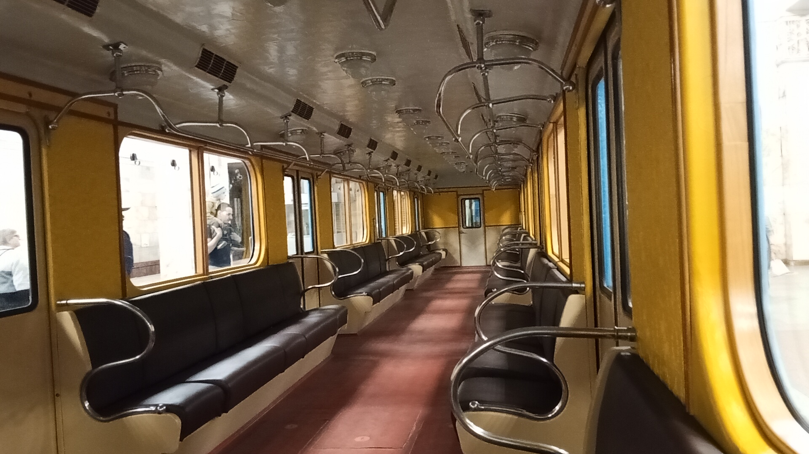

Г №530
Вагон типа Г №530 — музейный экспонат Московского метрополитена. Построен в июле 1952 года. Один из немногих сохранившихся вагонов этого типа, участвует в выставках на станции «Партизанская».
Общая информация
📅 Постройка
Июль 1952
Модель: Г
📍 Текущее местонахождение
Народный музей Московского метрополитена
С 2015 года — музейный
Назначение: Музейный
История и паспортные данные
Хронология службы
| Город | Депо/Парк | № | С... | По... | Примечание |
|---|---|---|---|---|---|
| 🇷🇺 Москва | Народный музей Московского метрополитена | 530 | 2015 | ||
| ТЧ-5 «Калужское» | 12.1965 | 16.11.1976 | |||
| ТЧ-2 «Сокол» | 08.1952 | 12.1965 |
Паспортные данные
| Город: | Москва 🇷🇺 Россия |
| Депо/Парк: | Народный музей Московского метрополитена |
| Модель: | Г |
| Построен: | 07.1952 |
| Текущее состояние: | Эксплуатируется |
| Назначение: | Музейный |
История
Постройка
Вагон построен на Мытищинском машиностроительном заводе.
Поступление в депо
Вагон поступил в депо ТЧ-2 «Сокол».
Перевод в ТЧ-5
Вагон передан в депо ТЧ-5 «Калужское».
Списание
Вагон списан с пассажирской эксплуатации.
Библиотека в депо
Перегнан в ТЧ-3 «Измайлово», использовался в качестве библиотеки в депо.
Перевод в ТЧ-12
Вагон перегнан в ТЧ-12 «Новогиреево».
Музейный статус
Восстановлен и зачислен на баланс метрополитена в качестве музейного.
Выставка на Сокольнической площади
Установлен в сквере Московского метро на Сокольнической площади.
Фотогалерея

На выставке в честь 91-летия Московского метро

Внутреннее убранство.
Нажмите на фото для увеличения
«Вагон типа Г №530 — один из пяти сохранившихся в хорошем состоянии представителей своего типа. В то время как другие вагоны этой серии доживают свой век в виде гаражей и сараев, №530 прошёл путь от пассажирских перевозок до библиотеки в депо, а сегодня встречает гостей на выставках как гордый свидетель эпохи становления Московского метро».